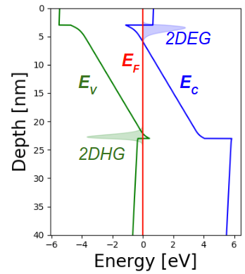

The PyNitride Scientific Package¶
Everything the Python-friendly III-Nitride engineer needs!
What is PyNitride?¶
{kind=link}

PyNitride band diagram of a GaN-on-AlN HEMT
PyNitride is a 1D solver for band diagram analysis of epitaxial heterostructures, and is capable of arbitrarily mixed self-consistent simulations of classical, Schrodinger, and Multi-band k.p properties, as well as phonon spectra. It can be run on a laptop for simple jobs, and parallelizes well onto many-core machines for computationally intense applications such as the study of hole-phonon interaction.
The software is still in the alpha phase and has not been publicly released; however, interested (and Python-equipped) researchers should contact the author directly to obtain access.
This codebase is in a continual state of work, but is steadily being refined with validation and unit tests and more complete documentation. I hope others might find these tools useful, either for their own calculation or for learning purposes, as I’ve written up a good deal of the physics that goes into these problems.
Contents¶
Find out more about the Physics in PyNitride or skip into the API reference.
Authors¶
{kind=link}
Sam Bader is an Applied Physics PhD student with Prof Jena and Prof Xing at Cornell University, working on p-channel III-Nitride devices.
And Martin Schubert works on early-stage projects at Google X.
If you find this useful let me know! And show some love by citing the project!
Acknowledgements¶
These tools owe a great deal to many other wonderful projects from the Python community, including Scipy, Cython, Pint, and Anaconda.
Thanks also to 1DPoisson, the fast and convenient standalone 1D Schrodinger Poisson solver from Greg Snider which inspired this toolset.
And finally, Sam thanks his advisors Debdeep Jena and Grace Xing for research support and ever-helpful discussions.